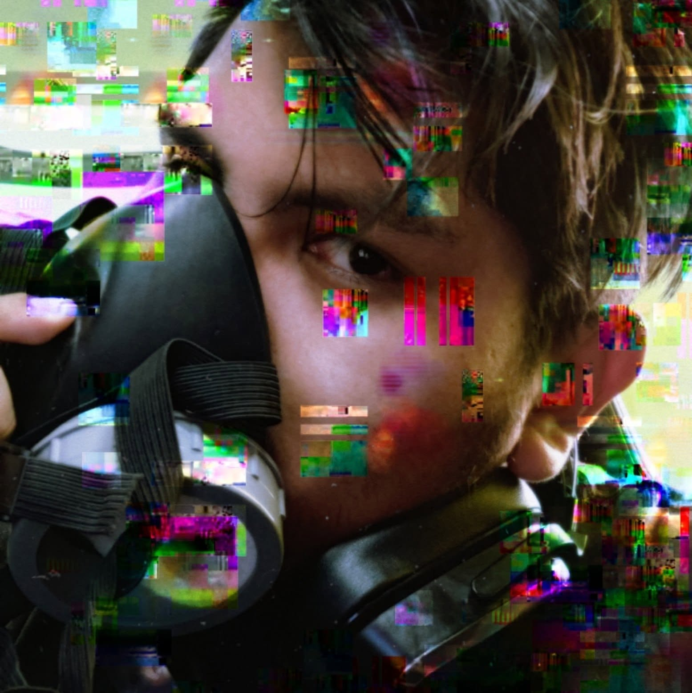

Marketing • Advertising • Digital Strategy
Media & Advertising Manager | Creative Strategist | Photographer
VIEW PROJECTS
Digital Marketing
Advertising
Photography
Strategic Communication
Marketing and Advertising Specialist with experience in media management, digital campaigns, strategic communication, photography and event coverage.
Responsible for media coordination, event photography and social media management during the Tawaqo election campaign.
Managed Facebook content, launched Instagram and TikTok channels, coordinated interviews with television media and accompanied candidates during media appearances.
The campaign involved pre-election events with more than 500 attendees and a final election event attended by approximately 150 participants.
Worked directly with 3 television outlets and 5 digital media platforms, while maintaining continuous Facebook activity throughout the carnival season.
Digital strategy, communication planning and content production.
Official coverage, strategic communication and digital content.
Cultural communication, photography and public outreach.
Email: gersonosorio12@gmail.com
Phone: +591 65143409